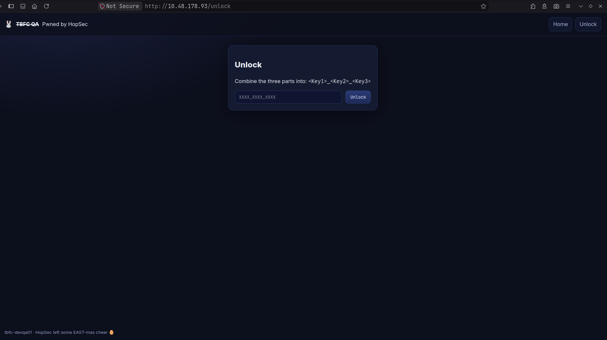
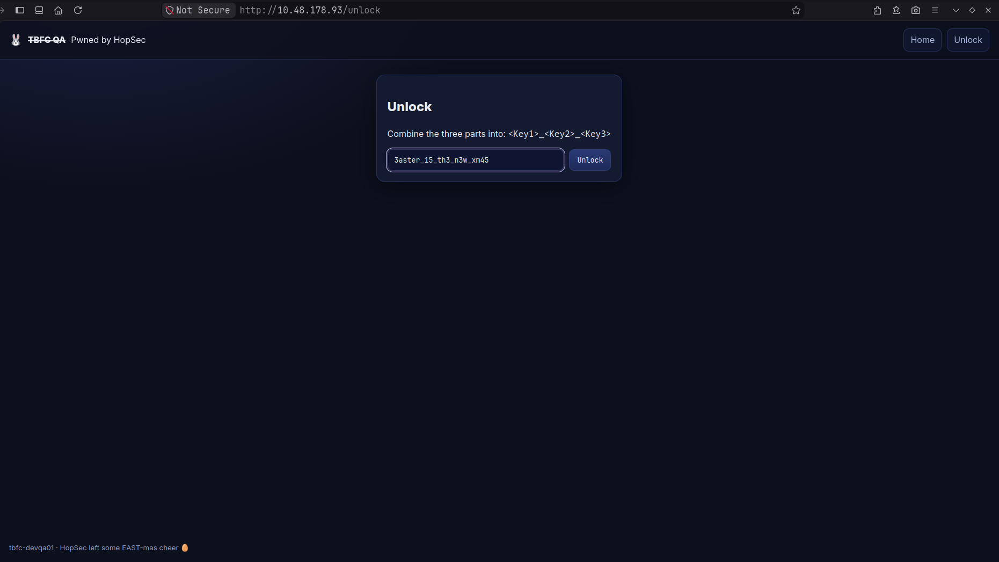
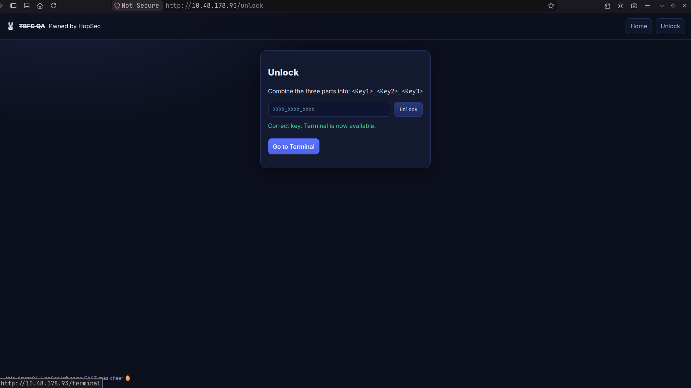
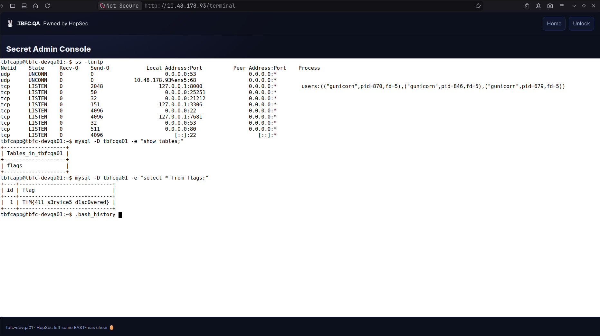

~
❯ nmap 10.48.178.93
Starting Nmap 7.991 ( https://nmap.org ) at 2026-09-27 13:15 +0530
Nmap scan report for 10.48.178.93
Host is up (0.10s latency).
Not shown: 998 filtered tcp ports (no-response)
PORT STATE SERVICE
22/tcp open ssh
80/tcp open http
Nmap done: 1 IP address (1 host up) scanned in 9.83 seconds
~
❯ nmap -p- --script=banner 10.48.178.93
Starting Nmap 7.991 ( https://nmap.org ) at 2026-09-27 13:07 +0530
Nmap scan report for 10.48.178.93
Host is up (0.084s latency).
Not shown: 65531 filtered tcp ports (no-response)
PORT STATE SERVICE
22/tcp open ssh
|_banner: SSH-2.0-OpenSSH_9.6p1 Ubuntu-3ubuntu13.14
80/tcp open http
21212/tcp open trinket-agent
|_banner: 220 (vsFTPd 3.0.5)
25251/tcp open unknown
|_banner: TBFC maintd v0.2\x0AType HELP for commands.
Nmap done: 1 IP address (1 host up) scanned in 481.73 seconds
~
❯ ftp 10.48.178.93 21212
Connected to 10.48.178.93.
220 (vsFTPd 3.0.5)
Name (10.48.178.93:user0): anonymous
230 Login successful.
Remote system type is UNIX.
Using binary mode to transfer files.
ftp> get tbfc_qa_key1 -
200 PORT command successful. Consider using PASV.
150 Opening BINARY mode data connection for tbfc_qa_key1 (13 bytes).
KEY1:3aster_
226 Transfer complete.
13 bytes received in 0.0001 seconds (112.5122 kbytes/s)
ftp>
221 Goodbye.
~
❯ nc -v 10.48.178.93 25251
Connection to 10.48.178.93 25251 port [tcp/*] succeeded!
TBFC maintd v0.2
Type HELP for commands.
HELP
Commands: HELP, STATUS, GET KEY, QUIT
GET KEY
KEY2:15_th3_
QUIT
bye
~
❯ nmap -sU 10.48.178.93
You requested a scan type which requires root privileges.
QUITTING!
~
❯ sudo nmap -sU 10.48.178.93
[sudo] password for user0:
Starting Nmap 7.991 ( https://nmap.org ) at 2026-09-27 13:24 +0530
Nmap scan report for 10.48.178.93
Host is up (0.094s latency).
Not shown: 999 open|filtered udp ports (no-response)
PORT STATE SERVICE
53/udp open domain
Nmap done: 1 IP address (1 host up) scanned in 9.89 seconds
~
❯ dig @10.48.178.93 TXT key3.tbfc.local +short
"KEY3:n3w_xm45"


